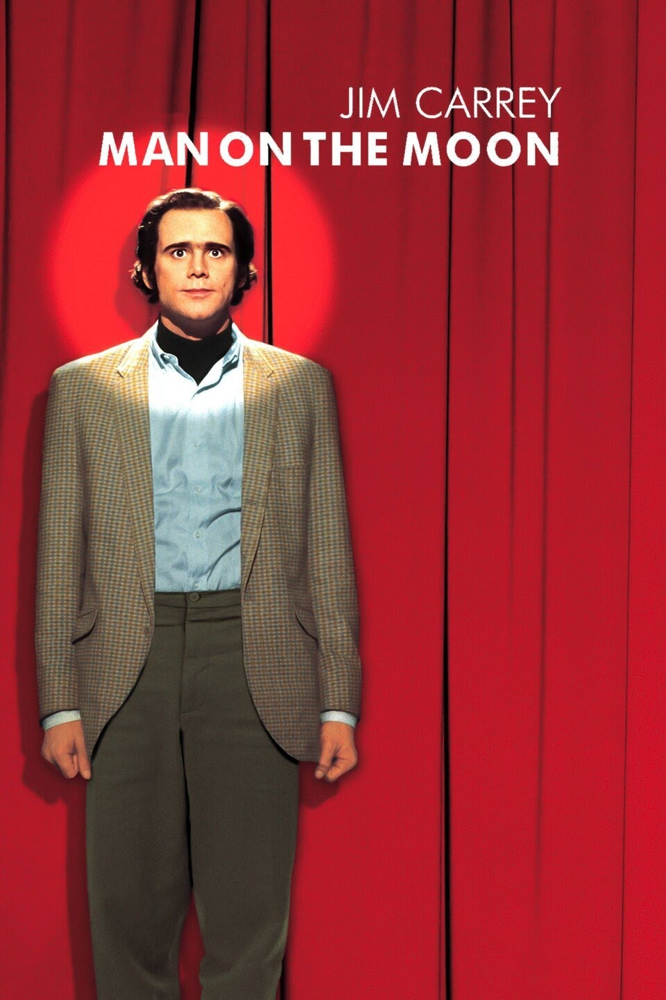

Man on the Moon is a 1999 biographical comedy-drama film about the late American entertainer Andy Kaufman, starring Jim Carrey as Kaufman. The film was directed by Miloš Forman and also features Danny DeVito, Courtney Love, and Paul Giamatti.
The story traces Kaufman's steps from childhood through the comedy clubs and television appearances that made him famous, including his memorable appearances on Saturday Night Live, Late Night with David Letterman, Fridays, and his role as Latka Gravas on the sitcom Taxi, which was popular among viewers but disruptive for Kaufman's co-stars. The film pays particular attention to the various inside jokes, scams, put-ons, and happenings for which Kaufman was famous, most significantly his long-running feud with wrestler Jerry "The King" Lawler and his portrayal of the bawdy lounge singer Tony Clifton.